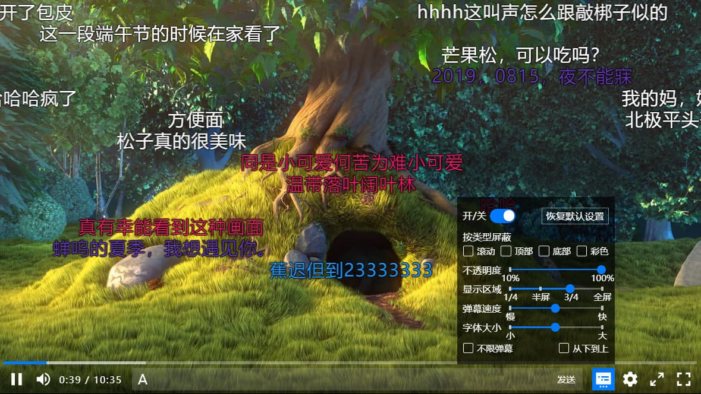

NPlayer
可定制、插件化、响应式（支持移动、平板等多种设备）的弹幕视频播放器

点击 👆 在线预览
响应式
支持手机、平板、桌面电脑，并且可以自定义任意多个断点，不仅仅是兼容移动端。

可定制
可轻松配置控制条、上下文菜单、设置和定制主题，并提供了内置组件方便二次开发。
多功能
弹幕、全屏、网页全屏、快捷键、画中画、隔空播放、速度控制、上下文菜单、视频缩略图、国际化等等。

演示
* 外网视频可能需要翻墙才能访问，拖动播放器👉右下角可以改变播放器尺寸。


快速上手
第一步：安装 NPlayer
npm i -S nplayer
第二步：使用 NPlayer
import Player from 'nplayer'const player = new Player({src: "https://v-cdn.zjol.com.cn/280443.mp4",})player.mount(document.body)